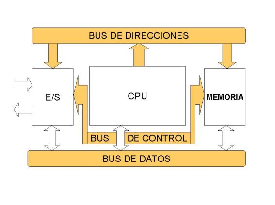

UNIDAD 3
"Selección de componentes para ensamble de equipo de cómputo"
3.1. Chip Set
Un chipset (traducido como circuito integrado auxiliar) es el conjunto de circuitos integrados diseñados con base a la arquitectura de un procesador (en algunos casos, diseñados como parte integral de esa arquitectura), permitiendo que ese tipo de procesadores funcionen en una placa base. Sirven de puente de comunicación con el resto de componentes de la placa, como son la memoria, las tarjetas de expansión, los puertos USB, ratón, teclado, etc. Las placas base modernas suelen incluir dos integrados, denominados puente norte y puente sur, y suelen ser los circuitos integrados más grandes después de la GPU y el microprocesador. Las últimas placa base carecen de puente norte, ya que los procesadores de última generación lo llevan integrado. El chipset determina muchas de las características de una placa base y por lo general la referencia de la misma está relacionada con la del chipset. A diferencia del microcontrolador, el procesador no tiene mayor funcionalidad sin el soporte de un chipset: la importancia del mismo ha sido relegada a un segundo plano por las estrategias de marketing.

" 3.1.1 CPU"
La unidad central de procesamiento es el hardware dentro de un computador u otros dispositivos programables, que interpreta las instrucciones de un programa ordenador mediante la realización de las operaciones básicas aritméticas, lógicas y de entrada/salida del sistema. Una computadora puede tener más de una cpu esto se llama multiprocesamiento. Todas las CPU modernas son microprocesadores, lo que significa que contienen un solo chip. Algunos circuitos integrados pueden contener varias cpus en un solo chip; estos IC son denominados procesadores multi-core. Un CI que contiene una cpu también puede contener los dispositivos periféricos, y otros componentes de un sistema informático; esto se llama un sistema de chip

"3.1.2 Controlador De Bus"
El Bus es la vía a través de la que se van a transmitir y recibir todas las comunicaciones, tanto internas como externas, del sistema informático. El bus es solamente un Dispositivo de Transferencia de Información entre los componentes conectados a él, no almacena información alguna en ningún momento. Los datos, en forma de señal eléctrica, sólo permanecen en el bus el tiempo que necesitan en recorrer la distancia entre los dos componentes implicados en la transferencia. En una unidad central de Bus de sistema típica el bus se subdivide en tres buses o grupos de líneas: Bus de Control. Bus de Datos. Direcciones.
Bus de Direcciones.
Es un canal de comunicaciones constituido por líneas que apuntan a la dirección de memoria que ocupa o va a ocupar la información a tratar. Una vez direccionada la posición, la información, almacenada en la memoria hasta ese momento, pasará a la CPU a través del bus de datos. Para determinar la cantidad de memoria directamente accesible por la CPU, hay que tener en cuenta el número de líneas que integran el bus de direcciones, ya que cuanto mayor sea el número de líneas, mayor será la cantidad de direcciones y, por tanto, de memoria a manejar por el sistema informático..
Bus de Datos.
El bus de datos es el medio por el que se transmite la instrucción o dato apuntado por el bus de direcciones. Es usado para realizar el intercambio de instrucciones y datos tanto internamente, entre los diferentes componentes del sistema informático, como externamente, entre el sistema informático y los diferentes subsistemas periféricos que se encuentran en el exterior, una de las características principales de una computadora es el número de bits que puede transferir el bus de datos (16, 32, 64, etc.). Cuanto mayor sea este número, mayor será la cantidad de información que se puede manejar al mismo tiempo..
Bus de Control.
Es un número variable de líneas a través de las que se controlan las unidades complementarías. El número de líneas de control dependerá directamente de la cantidad que pueda soportar el tipo de CPU utilizada y de su capacidad de direccionamiento de información.
"3.1.2 Puertos I/O"
En computación, entrada/salida, también abreviado E/S o I/O, es la colección de interfaces que usan las distintas unidades funcionales (subsistemas) de un sistema de procesamiento de información para comunicarse unas con otras, o las señales (información) enviadas a través de esas interfaces. Las entradas son las señales recibidas por la unidad, mientras que las salidas son las señales enviadas por ésta. El término puede ser usado para describir una acción; "realizar una entrada/salida" se refiere a ejecutar una operación de entrada o de salida. Los dispositivos de E/S los usa una persona u otro sistema para comunicarse con una computadora.

"3.1.4 Controlador de interrupciones"
Este circuito integrado controla las interrupciones del sistema. Como el microprocesador sólo posee dos entradas de interrupción, y puede controlar muchas más, es necesario algún integrado que no permita ello. El 8259 cumple este propósito. El funcionamiento del 8259 es muy sencillo: Supongamos que no queda ninguna interrupción pendiente y el CPU está trabajando en el Programa principal
"3.1.5 Controlador de acceso directo"
El mecanismo de acceso directo a memoria está controlado por un chip específico, el DMAC ( DMA Controller ), que permite realizar estos intercambios sin apenas intervención del procesador. En los chipset XT estaba integrado en un chip 8237A que proporcionaba 4 canales de 8 bits (puede mover solo 1 Byte cada vez); sus direcciones de puerto son 000 00Fh. Posteriormente en los AT se instalaron dos de estos integrados y las correspondientes líneas auxiliares en el bus de control.
"3.1.6 Circuitos de temporizacion y de control"
Es una red secuencial que acepta un código que define la operación que se va a ejecutar y luego prosigue a través de una secuencia de estados, generando una correspondiente secuencia de señales de control. Estas señales de control incluyen el control de lectura escritura y señales de dirección de memoria válida en el bus de control del sistema
"3.1.7 Controladores de video"
Los controladores son circuitos de entrada que tienen todas las impresoras. Son los que procesan la información en primer lugar para saber exactamente qué les está llegando y como manipular los datos.
3.2. Aplicaciones
El Chipset es el que hace posible que la placa base funcione como eje del sistema, dando soporte a varios componentes e interconectándolos de forma que se comuniquen entre ellos haciendo uso de diversos buses. Es uno de los pocos elementos que tiene conexión directa con el procesador, gestiona la mayor parte de la información que entra y sale por el bus principal del procesador, del sistema de vídeo y muchas veces de la memoria RAM. En el caso de los computadores PC, es un esquema de arquitectura abierta que establece modularidad: el Chipset debe tener interfaces estándar para los demás dispositivos. Esto permite escoger entre varios dispositivos estándar, por ejemplo en el caso de los buses de expansión, algunas tarjetas madre pueden tener bus PCI-Express y soportar diversos tipos de tarjetas de distintos anchos de bus (1x, 8x, 16x). En el caso de equipos portátiles o de marca, el chipset puede ser diseñado a la medida y aunque no soporte gran variedad de tecnologías, presentará alguna interfaz de dispositivo.
"3.2.1 Aplicaciones I/O"
Los dispositivos periféricos nos ayudan a introducir a la computadora los datos para que esta nos ayude a la resolución de problemas y por consiguiente obtener el resultado de dichas operaciones, es decir; estos dispositivos nos ayudan a comunicarnos con la computadora, para que esta a su vez nos ayude a resolver los problemas que tengamos y realice las operaciones que nosotros no podamos realizar manualmente.
"3.2.2 Almacenamiento"
Unidades de disquete.
Por malo y anticuado que sea un ordenador, siempre dispone de al menos uno de estos aparatos. Su capacidad es totalmente insuficiente para las necesidades actuales, pero cuentan con la ventaja que les dan los muchos años que llevan como estándar absoluto para almacenamiento portátil.
Tamaño Tipo de disco Capacidad Explicación
5,25” SS/DD 180 Kb Una cara, doble densidad. Desfasado
5,25” DS/DD 360 Kb Dos caras, doble densidad. Desfasado
5,25” DS/HP 1,2 MB Dos caras, alta densidad. Desfasado pero útil
3,5” DS/DD 720 Kb Dos caras, doble densidad. Desfasado pero muy común
3,5” DS/HD 1,44 MB Dos caras, alta densidad. El estándar actual.
3.3. Ambientes de servicio
La terminología de los integrados ha cambiado desde que se creó el concepto del chipset a principio de los años 1990, pero todavía existe equivalencia haciendo algunas aclaraciones:
• El puente norte, northbridge, MCH (memory controller hub) o GMCH (graphic MCH), se usa como puente de enlace entre elmicroprocesador y la memoria. Controla las funciones de acceso hacia y entre el microprocesador, la memoria RAM, el puerto gráficoAGP o el PCI-Express de gráficos, y las comunicaciones con el puente sur. Al principio tenía también el control de PCI, pero esa funcionalidad ha pasado al puente sur.
• El puente sur, southbridge o ICH (input controller hub), controla los dispositivos asociados como son la controladora de discos IDE, puertos USB, FireWire, SATA, RAID, ranuras PCI, ranura AMR, ranura CNR, puertos infrarrojos, disquetera, LAN, PCI-Express 1x y una larga lista de todos los elementos que podamos imaginar integrados en la placa madre. Es el encargado de comunicar el procesador con el resto de los periféricos.
En la actualidad los principales fabricantes de chipsets son AMD, ATI Technologies (comprada en 2006 por AMD), Intel, NVIDIA, Silicon Integrated Systems y VIA Technologies.
"3.3.1 Negocios"
Este documento presenta una pequeña descripción del desarrollo, a partir de los años 40 y hasta la fecha actual, de la evolución histórica de la herramienta computacional, en su impacto sobre los diferentes bloques del proceso administrativo, ubicados en el tiempo desde los modelos lineales y aislados hasta las aplicaciones de teoría de sistemas que caracterizan la informática administrativa de nuestros días y del futuro inmediato. Presenta asimismo una discusión sobre los alcances de los esquemas de planeación estratégica, en el marco de los problemas de gestión del presente.
"3.3.2 Comercio Electrónico"
Se considera “Comercio Electrónico” al conjunto de aquellas transacciones comerciales y financieras realizadas a través del procesamiento y la transmisión de información, incluyendo texto, sonido e imagen.
TIPOS DE TRANSACCIONES DE COMERCIO ELECTRONICO
* “Business to business” (entre empresas)
* “Business to consumers” (Entre empresa y consumidor)
* “Consumers to consumers” (Entre consumidor y consumidor)
* “Consumers to administrations” (Entre consumidor y administración)
* “Business to administrations” (Entre empresa y administración)